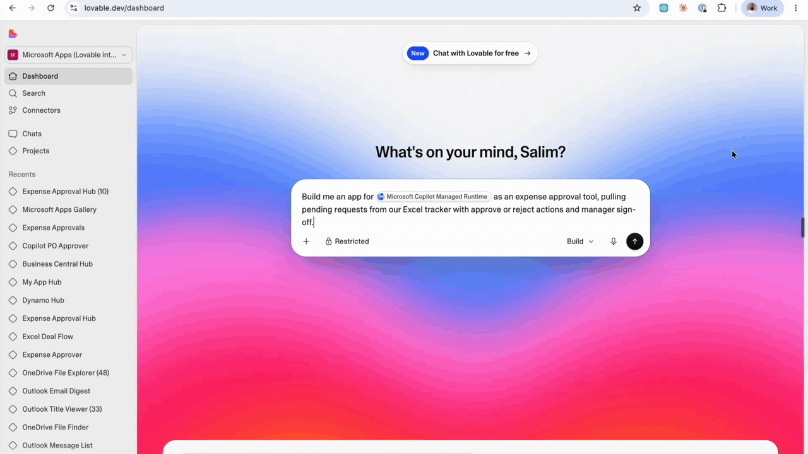
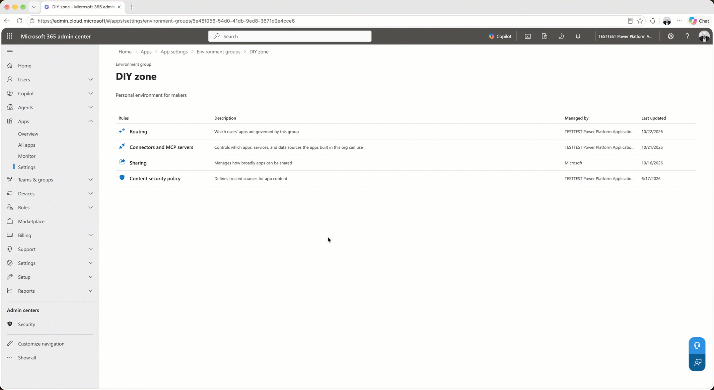
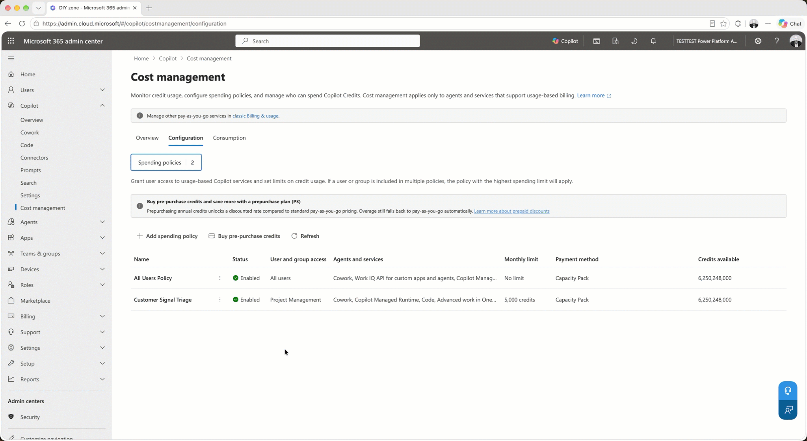

免手写 Microsoft Entra 统一鉴权
应用一经部署即处于 Microsoft Entra 身份保护之下，直接复用企业现有的单点登录、安全组与条件访问策略，开发者无需拼装任何令牌校验代码 [1][3]。
2026 年 11 月 17 日，Microsoft Copilot 托管运行时（Copilot Managed Runtime）在 Ignite 大会正式商用。在广播舞台专场 LIVE07 中，微软应用总经理 Clay Wesener 与 Lovable 产品经理 Malavika Balachandran Tadeusz 共同演示了如何将 Cowork、GitHub、命令行及 Lovable 等三方工具构建的应用，无缝发布至统一受控的企业底座 [1][2]。这套运行环境消除了本地端口孤岛与推倒重做的返工断崖，默认继承 Microsoft Entra 身份权限，并在 Microsoft 365 管理中心汇集单一资产台账与超 1,500 款连接器策略护栏 [1][3]。
01 / Build Anywhere Vision
生成式开发工具已经把编写业务软件的门槛彻底摊平。在 LIVE07 开场对谈中，微软应用业务总经理 Clay Wesener 指出，员工如今在任何顺手的位置都能拉起应用：业务专家在协同画布（Cowork）的工作流里用一句话生成工具，软件工程师从 GitHub 与代码编辑器起步，而一线团队则在 Lovable 等第三方平台内快速拼装交互界面 [1]。真正阻碍企业落地的并非“造不出原型”，而是产物沦为仅限本机访问的本地端口链接，或在交付审查前撞上断崖 [1]。
Microsoft Copilot 托管运行时（Copilot Managed Runtime）于 2026 年 11 月 17 日正式商用，核心使命就是为分散在各处的构建入口提供同一个企业级落脚点 [1][2]。企业无需手工配置云服务器、弹性扩缩容或网关高可用，所有应用发布后均由微软统一承载运行、打通身份鉴权并纳入集中治理 [2][3]。
下方官方点播导览台完整收录了 LIVE07 广播专场的 9 分 07 秒高清视频流与四个核心时间轴章节，点击顶部标签即可分段对照查阅原声论点 [1]：
切换 00:10 跨端愿景、02:05 Entra 权限继承、03:52 管理中心护栏与 06:15 零返工投产四段实录，支持直接唤醒微软官方内嵌播放器。
02 / Ecosystem & Entra Identity
为什么第三方生成式开发平台的用户迫切需要把应用“发往微软环境”？Lovable 产品经理 Malavika Balachandran Tadeusz 在 LIVE07 对谈与配套伙伴专场 THRSP1155 中给出了鲜活的一线观察：在 Lovable 上构建应用的群体横跨整个组织光谱，一端是为值班同事编排轮班表的后勤保洁人员，另一端则是在客户关系管理系统之上搭建智能体工作流的原生销售团队 [1][4]。无论角色如何变化，一旦工具要交给同事协同使用，安全与权限就成了不可妥协的底线 [1][4]。
对于非科班出身的业务构建者而言，自行编写登录鉴权、界定应用用户角色以及防止敏感记录越权泄露，往往是最容易踩坑的深水区 [1]。接入托管平台开发套件后，第三方工具构建的应用在托管运行时中天然获得两层开箱即用的安全契约 [1][3]：
应用一经部署即处于 Microsoft Entra 身份保护之下，直接复用企业现有的单点登录、安全组与条件访问策略，开发者无需拼装任何令牌校验代码 [1][3]。
调用底层业务连接器拉取数据时，运行时自动沿用当前登录员工自身的访问权限，杜绝因共享服务账号导致的敏感商业数据全员裸奔 [1]。
在销售电话会前自动汇总客户近况、商机金额、关键联系人为代表生成增购简报，依靠 Entra 身份天然锁定仅负责该客户的销售代表本人可见 [1]。
除了 Lovable 在现场展示的一键定向构建体验外，智能体平台 Manus 联合创始人兼首席产品官张涛也在官方发布中印证了同一趋势：借助托管运行时，由外部智能体生成的企业网页应用能够直接运行在客户自有的微软租户边界内，自动继承既有的安全与合规策略 [2]。

构建者在自然语言提示词中直接选定 Microsoft Copilot Managed Runtime 作为目标底座，连接受控表格追踪待办单据并生成经理签批界面，无需脱离熟悉的工具环境 [1][3]。
03 / Admin Observability & Guardrails
在缺乏统一运行底座的年代，一线团队私自搭建的小工具散落在个人云账号或部门角落里，技术管理部门往往要等出事后才察觉异常。主持人 Jiun Hong 在听完治理演示后感叹，过去这一切全都潜伏在阴影之中，回想起来令人后怕 [1]。Clay Wesener 将托管运行时赋予管理员的能力拆解为全局可观测性与前置策略护栏两大支柱 [1][3]。
无论应用最初诞生于 Lovable、Cowork、Copilot Code、Copilot Studio 还是本地命令行，只要部署到托管运行时，管理员在 Microsoft 365 管理中心（Microsoft 365 admin center） 打开应用清单，看到的始终是同一张全局资产表 [1][2]。每一款应用的创建者、当前活跃使用人群、背后挂载的数据源一目了然；管理员还能直接针对加载速度过慢或运行报错配置主动告警，彻底消灭游离于监管视线之外的“影子应用” [1][3]。
| 治理护栏维度 | 管理中心管控粒度 | 对一线构建者与企业的实际价值 |
|---|---|---|
| 连接器与组合策略 | 覆盖超 1,500 款微软原生、第三方及自定义连接器，精确规定谁可用哪些连接器、哪些连接器允许同台混用 [1][3] | 防止高密级业务库与外部非受控渠道桥接外泄，同时保留合法系统直连效率 [1][3] |
| 环境路由与个人沙盒 | 为每位创作者隔离受管的个人沙盒环境（DIY zone），按用户组设定应用归属与治理路由规则 [3] | 允许员工在安全沙盒内大胆试错，避免未成熟草稿污染核心生产域 [3] |
| 共享范围与外部访客控制 | 统一界定应用在组织内外的最大可分享范围、安全组准入及访客访问权限 [1][3] | 让验证通过的应用成为组织“预先核准”的合规资产，一键安全分发给团队 [1] |
| 内容安全策略与包白名单 | 限制应用内允许引用的受信任内容源（CSP）、外部端点以及第三方代码软件包类型 [1][3] | 从源头拦截恶意依赖包注入与未经审计的外部脚本拉取 [1][3] |
| 点数花费与计费封顶策略 | 在成本管理面板按全员或项目组配置月度点数上限（如单项目 5,000 点数封顶）并绑定容量包或按量兜底 [3] | 兼顾部门创新探索弹性与财务预算可预测性，消除月末账单失控风险 [3] |

管理员在同一面板内集中定义路由归属（Routing）、连接器与模型上下文服务准入、共享边界（Sharing）以及受信任内容安全策略（Content security policy）[1][3]。

支持按用户组为托管运行时及关联服务设置月度点数限额（当同一用户命中多条策略时自动取最高授权额度），实现精细化成本护航 [3]。
04 / Zero-Rebuild Lifecycle & Previews
从“我做出了一个好用的小工具”到“整个部门明天就能正式用起来”，托管运行时给一线构建者带来的最大工程红利就是零推倒重来（Zero Rebuild） [1]。过去团队花几周打磨出惊艳的业务原型，提交上线评审时却常因误用了违规数据源或缺失企业级鉴权，被安全管理员一票否决并被迫换栈重写 [1]。如今创作者依然保持敏捷试验节奏，但从第一行提示词或代码起就生长在企业预先核准的连接器与软件包护栏之内，验证跑通即可直接推向生产 [1]。
围绕本场对谈尾声预告的次日深度专场与官方技术博客（aka.ms/CMRblog），微软同步揭晓了支撑复杂生产级应用的四大进阶工程能力 [2][3]：
aka.ms/msagent-cli），工程师可直接在本地机器编写与修改自定义 Copilot Studio 智能体及配套工作流，与使用浏览器可视化设计器的业务同事共享同一套 Git 单一事实源 [2][3]。高通（Qualcomm）首席架构师 Paulo Joaquim 指出，命令行与编码智能体的结合让高通工程团队得以用熟悉的代码优先体验快速构建测试智能体，并与企业成熟的软件生命周期实践无缝互补 [2]。aka.ms/cmrcodeagents-signup）支持在预览允许范围内自由选配模型、编排器或执行内核，直接部署在托管运行时上并零配置默认集成 Agent 365 治理、Microsoft Entra 身份、多端分发渠道与监控告警 [2][3]。05 / References: Official Primary Sources & Companion Sessions
0c28b348-0e35-4615-9f32-d9bbcc40e458）与英中双语 WebVTT 完整演讲实录